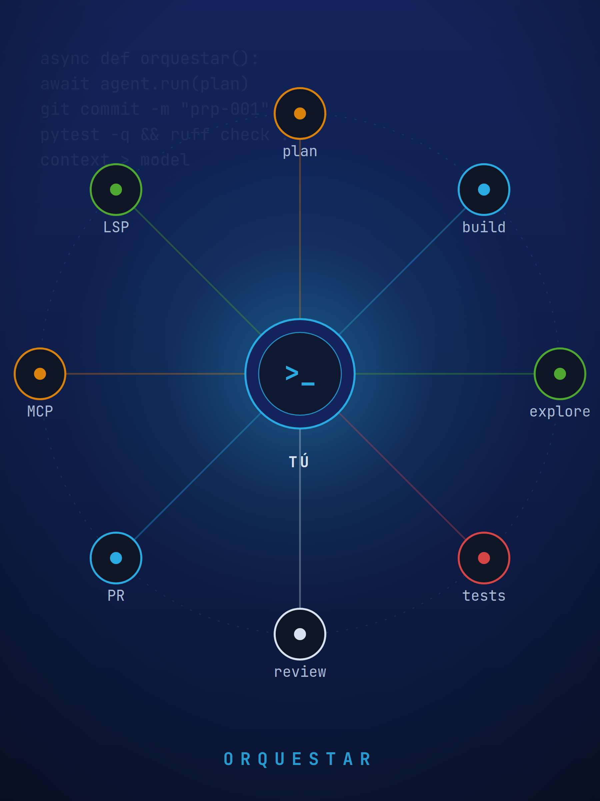
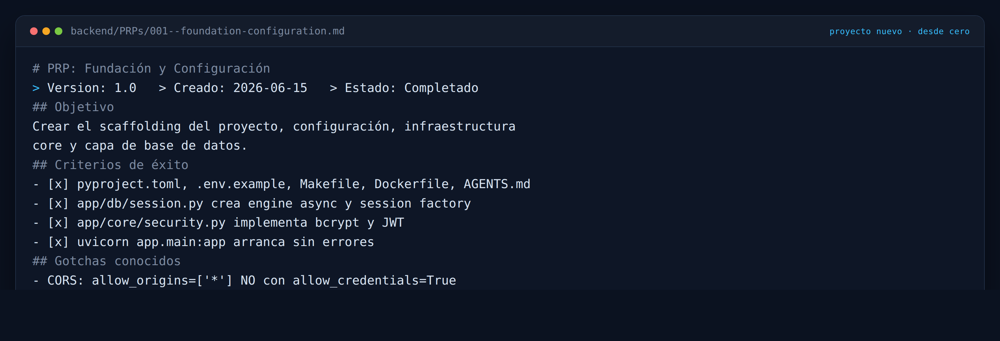
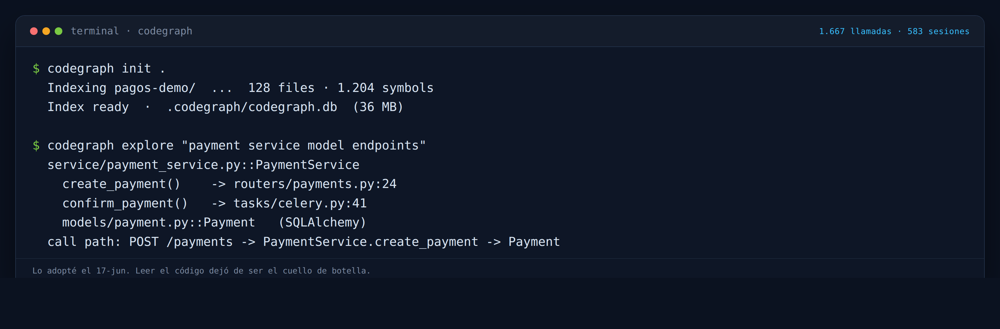

Cómo dejé de programary empecé a orquestar.
Orquesto agentes con opencode. Esto es lo que aprendí.


José Miguel Amaya — 15+ años construyendo software
- CTO y socio fundador de Xprende Tech (Quito). Full Stack Engineer en Efilm Online.
- Fundador de Piura AI, Tallanix, Python Piura y VICUX.
- Especialista en Python, Django/FastAPI e IA (LangChain, LangGraph, RAG).
- Hace 5 meses integré opencode a mi trabajo diario. Hoy es mi forma de trabajar.
opencode: el agente de código, open source
El agente de código abierto. Hoy: más de 200.000 estrellas en GitHub.
Vive en tu terminal. También hay app de escritorio y extensión de IDE.
Anthropic, OpenAI, Google o un modelo local. Tú eliges; no estás atado a nadie.
Tus archivos y tus llaves se quedan contigo. Nada sale si no lo autorizas.
curl -fsSL https://opencode.ai/install | bash
No es un chat: es un agente que lee, edita y ejecuta en tu repo.
Una TUI, un servidor y tus herramientas
Tú
el promptTUI
clienteServidor
local · OpenAPIModelo + tools
read · edit · bashTu repo
archivos y gitLa TUI es el cliente: habla con un servidor HTTP local.
Cada hilo es una sesión; se guarda en tu máquina.
Dos modos con Tab: build edita, plan solo lee. Tú apruebas cada acción sensible.
Con lsp: true, los errores del editor vuelven al agente y se corrige solo.
El mismo esqueleto que después armé a mi manera.
Empecé gratis, entendiendo código. En dos meses, 1.320 sesiones.
un backend viejo · sin plan mode ni skills.
minimax-m2.5-free. Probé gratis antes de pagar.
Le pedí que entendiera, no que escribiera.
Abril fue la duda. Mayo y junio, la explosión. Agosto bajó: no por trabajar menos, sino por trabajar mejor.
Probé 21 modelos. Ninguno arregló el fondo.
con deepseek-v4-flash. Dejé de saltar de modelo; la palanca no estaba ahí.
El agente fallaba por falta de contexto y verificación, no por “tonto”.
“21 modelos. Ninguno arregló el fondo”
En mayo y junio probé un modelo distinto casi cada día: 2.406 sesiones. La más cara, $25,55, una auditoría que se descarriló. Sin spec ni contexto, el modelo da igual.
Un proyecto nuevo desde cero
El 15 de junio abrí un backend nuevo. En lugar de improvisar, monté el método que me faltó en mayo:
AGENTS.md del repo
154 líneas: cómo se corre, cómo se prueba y qué convenciones sigue. El detalle vive en PRPs/ y Linear.
PRP por feature
001 fundación y 002 catálogo: criterios con casillas y gotchas. En otro repo, ya llevo 159.
Skills adoptadas
prp-manager, tdd, code-reviewer. Las instalo con skills.sh y las fijo en skills-lock.json.
Verificación que corre el agente
make test, ruff y mypy sin errores nuevos. Si no pasa, no cuenta.
860 sesiones después, es mi proyecto mejor organizado. No por el modelo: por el orden. A ese orden lo llamo el arnés: lo que yo armo alrededor de opencode.
Guías y sensores: las dos palancas del arnés
Guías para que acierte a la primera. Sensores para que se corrija antes de que yo mire.
Evitan el error antes de que ocurra.
- AGENTS.md que enlaza
- PRP por feature
- Empezar en plan · skills
Lo corrigen antes de que yo lo mire.
- make test · ruff · mypy computacional
- Subagente reviewer inferencial
- Revisión humana del PR inferencial
Del código a un PR, en siete pasos
Entender
codegraph explorePlanificar
modo planEspecificar
PRPs/00N--…Construir
modo buildVerificar
make test · ruff · mypyRevisar
subagente reviewerEntregar
gh pr create + humanoNo es un método de libro: es el orden que me funcionó. Cuando el paso 1 y el 3 están firmes, el resto casi se cuida solo.
Empiezo en plan, no en build
implementa y verifica
investiga en un contexto aparte
solo lee y diseña
En septiembre, por primera vez, plan (281) superó a build (161). Dejé de construir tanto y empecé a dirigir.
Delego: un subagente investiga aparte y me devuelve el resumen
Le pido
task: explore / general
Trabaja en su contexto
lee 40 archivos, sin ensuciar el mío
Me devuelve
3 conclusiones, no el ruido
subagentes lanzados en 5 meses. Mi sesión principal no se ahoga: recibo la conclusión, no el ruido.
Un AGENTS.md por repo. Mi config global está vacía.
Enlaces, no historia: cómo se corre, cómo se prueba y qué convenciones sigue. Se crea con /init.
Un AGENTS.md que intenta contarlo todo. Menos archivo, más enlaces.
El detalle vive en PRPs/ y en Linear, no en el AGENTS.md.
Cuando una sesión se acerca al límite, opencode la resume y sigue. Yo lo llamo a mano antes de que se ahogue.
Cambio de tarea, cambio de sesión. El contexto viejo no ayuda: estorba.
Compaction libera espacio, no guarda la verdad. Lo que importa vive en el AGENTS.md o en el PRP, que son texto en el repo.
230 sesiones con PRP. 159 en un repo.
en el título
001 a 159, en un repo

Un PRP es un contrato con casillas: objetivo, criterios de éxito, gotchas y qué no romper. El nombre lleva el issue: PRPs/007--fix-target-tests.md.
Codegraph: leer código dejó de ser el cuello de botella
Un mapa, no un texto
Nodos: funciones, clases, métodos. Aristas: quién llama a quién.
Se indexa una vez
codegraph init deja el grafo en .codegraph/, en tu máquina.
Se pregunta en tu idioma
Una consulta devuelve símbolos y su ruta de llamada, no 40 archivos.
Es un servidor MCP
Por defecto explore; node, callers e impact, on-demand. Se habilita por agente.

Antes: grep y abrir archivo por archivo. Ahora: una consulta.
No uso una skill: uso 16, en 8 familias
Una skill es una carpeta con instrucciones y scripts que el agente carga cuando la tarea encaja. Filtra por familia.
83.140 comandos de shell. 1.667 consultas a codegraph.
Un puñado de servidores MCP carga sus herramientas al contexto; lo pagas en cada request, los uses o no.
gh, docker, psql, pytest ya están autenticados y no cargan nada hasta que los llamo.
MCP conecta herramientas externas al agente. codegraph (leer código) y Linear (issues); se habilitan por agente.
MCP por excepción, no por costumbre. Se habilita por agente, para que solo pague contexto quien lo usa.
Cinco meses en una pantalla
28 abr – 30 sep
acciones reales
≈ 990 millones
≈ $0,11 por sesión
de 156 posibles
probados
repos tocados
auditoría Vue 2
25× lo que envié (990 M)
más barato que un token nuevo
El costo no está en el modelo: está en cuánto contexto reenvías.
La eficiencia no es menos sesiones: es menos correcciones
sesiones y mucho retrabajo. Velocidad sin método: sentía ir rápido y corregía el doble.
menos sesiones, plan > build, PRPs y codegraph. Cada sesión apunta mejor.
cinco meses, veinte proyectos. ≈ $0,11 por sesión. Menos que una hora de desarrollo.
No bajé el número de sesiones porque trabajara menos: subí la calidad de cada una. Eso es el arnés.
Los tres errores que me costaron mayo
Si volviera al 28 de abril, no cambiaría el modelo: cambiaría estas tres cosas.
Creí que era el modelo
Cambiaba de modelo casi cada día, sin darle contexto ni verificación.
Escribí un AGENTS.md que lo contaba todo
734 líneas de deuda. Hoy enlaza, no explica.
Confundí velocidad con avance
1.086 sesiones en mayo y el doble de correcciones.
Ninguno se arreglaba con un modelo mejor. Los tres, con orden.
Las que siempre me hacen
¿La IA me va a reemplazar?
No en tu trabajo, sí en tus tareas. El agente propone; el merge lo firmas tú. La responsabilidad no se delega.
¿Esto es solo para seniors?
Al contrario. El arnés obliga a escribir contexto y convenciones, que es donde se aprende.
¿Y el código de mis clientes?
opencode corre en tu máquina. Tú controlas permisos, MCP y contexto. Nada sale si no lo autorizas.
¿Tengo que pagar mucho?
Empecé gratis y terminé en once centavos por sesión. El arnés se arma con archivos de texto.
El arnés mínimo: tres archivos.
No necesitas 21 modelos ni 16 skills. Necesitas tres archivos que puedes crear hoy.
Se genera con /init: las reglas del repo — cómo se corre, cómo se prueba y qué convenciones sigue.
La verificación que corre el agente: make test, ruff y mypy. Si no pasa, no cuenta.
Una skill adoptada con skills.sh y fijada en el lockfile: casi ninguna la escribirás tú. Así tu equipo hereda la misma.
Empieza por tu repo, no por el prompt perfecto.